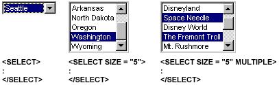
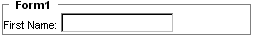

| ||||
Forms provide an interface for collecting, displaying, and delivering information, and are a key component of HTML. By providing different controls such as text fields, buttons, and checkboxes, forms can enhance Web pages with a means to exchange information between a client and a server. The various controls allow authors and users to perform actions, make choices, and quickly identify and enter information. When the form data is submitted to the server- or client-side script, the information either is parsed and cataloged, or redirected in response to the submission. Forms are prevalent throughout all graphics-based operating systems and Web pages.
Web-based forms are supported in most browsers, and including forms in a Web page is relatively straightforward. This overview introduces form controls, discusses form design and accessibility, and provides a first step to submitting and managing form data.
Note Handling form submissions requires knowledge of a programming language such as Perl, C++, or server-side scripting and Active Server Pages (ASP).
Using forms is advantageous because they are:
Forms provide a convenient interface for exchanging information between a server and a client, and allow an author to quickly create and distribute an HTML interface to a large audience. With DHTML, Web authors can enhance forms using CSS and client-side scripting languages, such as Microsoft® JScript® (compatible with ECMA 262 language specification) and Microsoft® Visual Basic® Scripting Edition (VBScript).
To enhance a form's visibility and make its controls easier to use, an author can apply CSS attributes, such as positioning and dynamic styles. Combined with robust client-side scripts, forms also can be enhanced to provide validation or masking, or even to perform calculations once reserved for the server.
Form controls allow authors to provide Web sites with benefits similar to other graphics-based programming languages. The following table provides a list of the supported form controls, when they were first available in Internet Explorer, what attributes are submitted, and a description.
| Element/Control | Availability | Submitted | Description |
|---|---|---|---|
| BUTTON | 4.0 | NAME, VALUE | Rich button control that can include DHTML is rendered. When submitted, Internet Explorer 4.0 submits the innerText property, and Internet Explorer 5 and later submits the NAME/VALUE pair. |
| INPUT_button | 3.0 | NAME, VALUE | INPUT element is rendered as a button. Events such as onclick can be included with the button to provide action when it is clicked. |
| INPUT_checkbox | 3.0 | NAME, VALUE | INPUT element is rendered as a check box. The check box is useful for selecting multiple groups of topics (for example, selecting favorite magazines) and Boolean decisions (for example, adding your e-mail to the mailing list). Events such as onclick can be used in conjunction with the checked property to determine conditions (for example, displaying a hidden object). |
| INPUT_file | 4.0 | NAME, VALUE(encoded) | Nonscriptable text field and Browse button are rendered. The ENCTYPE attribute for a form must be set to multipart/form.data for this control to work properly. For security reasons, the VALUE attribute is not accessible in script on the client. |
| INPUT_hidden | 3.0 | NAME, VALUE | Hidden control is rendered, and is useful for submitting additional information that does not need to be displayed to the user. |
| INPUT_image | 3.0 | NAME | Submit control is rendered as an image. The image control is a useful alternative to using buttons. When the image control is clicked, it is the only image control submitted for the form. In addition, an image control is submitted only if the NAME attribute is specified. |
| INPUT_password | 3.0 | NAME, VALUE | Text field masked with asterisks is rendered. The password field is useful on the client for shielding private information from anyone looking at the same screen. |
| INPUT_radio | 3.0 | NAME, VALUE | Radio control is rendered, and is useful for selecting one item from a set. Selecting one radio control clears any other radio controls with the same NAME attribute value. |
| INPUT_reset | 3.0 | Button that resets all form values is rendered. | |
| INPUT_submit | 3.0 | NAME, VALUE | Button that sends all the information for a particular form to the script or program specified in the ACTION attribute is rendered. The METHOD attribute specifies the way in which the form information is delivered.
Submit controls are sent only if the NAME attribute is defined. If more than one submit control exists in a particular form, only the control that is clicked is sent. |
| INPUT_text | 3.0 | NAME, VALUE | Single-line text field is rendered. |
| OPTION | 3.0 | VALUE, TEXT | OPTION object that specifies an item in a SELECT control. |
| SELECT | 3.0 | NAME, OPTION(selected) | Drop-down list or list box is created, comprised of included OPTION elements, or created dynamically using the options collection and add method. A list box is created by specifying a value greater than 1 for the SIZE attribute. Multiple options in a list box can be selected by including the MULTIPLE attribute. If the MULTIPLE attribute is included, a list box is created. If the SIZE and MULTIPLE attributes are not present, a drop-down list is created. |
| TEXTAREA | 3.0 | NAME, VALUE | Text field with multiple lines is rendered. The VALUE attribute of the TEXTAREA element is equivalent to the innerText property, and is located between the opening and closing tags. |
Before implementing forms on a Web site, the need for the FORM element must be determined. The FORM element is necessary for submitting form controls to a server. When a form is submitted, only the name/value pairs for the controls within the submitted FORM element are sent. The FORM element is not necessary if form controls are being used only for client-side scripting. However, other browsers may require the element before the controls are rendered.
When using the FORM element, the ACTION and METHOD attributes specify how and where the data in the form controls is delivered. The two methods used are get and post.
A form action is any script designed to process the delivered information and reply to the HTTP server, so that results can be returned to the client. The following sample demonstrates the syntax of the FORM element that sends form data as a post transaction to an ASP.
<FORM ACTION = "process.asp" METHOD = "post"> : </FORM>
Form controls are added to Web pages as HTML elements. For example, adding two text fields for the first and last names of visitors only requires the INPUT_text control.
<FORM> First Name: <INPUT TYPE = "text" NAME = "FirstName"> <BR> Last Name: <INPUT TYPE = "text" NAME = "LastName"> </FORM>
When adding controls, it is important to understand the difference between the ID and NAME attributes. Both attributes are accessible through client-side scripting, but only the NAME is passed when the form is submitted. In addition, the ID can be referred to directly in script while the NAME must be referred to by including the NAME of the parent form, if the element is a child of a FORM element. For example, if a Web author wants to access the VALUE attributes of the FirstName text field on the client, the following considerations must be taken into account.
<FORM NAME = "Form1"> <INPUT TYPE = "text" ID = "oFirstName" NAME = "FirstName" > </FORM>
var sFirstName = oFirstName.value;
var sFirstName = oFirstName.value;
// Access the VALUE through the form NAME var sFirstName = Form1.FirstName.value; // Access the VALUE through the forms collection using the NAME attribute. var sFirstName = document.forms[0].FirstName.value; // Access the VALUE through the forms collection using the item method. var sFirstName = document.forms[0].items[0].value;
The INPUT_text, INPUT_password, and TEXTAREA controls are useful for submitting name/value pairs. A Web author may want more specific information or a more controlled environment for entering information. Ensuring that the correct information is supplied is critical for databases that rely on specific values for queries. It is useful to provide preset values and choices that can be selected when particular information is required.
The SELECT, INPUT_checkbox, and INPUT_radio controls are ideal for selecting preset information and making choices without requiring (though allowing) keyboard input. This makes it easier and faster for users to supply information, and it means that the Web author or system administrator knows the exact value combinations.
The SELECT control is extremely useful for quickly selecting one or more items from a predefined or dynamically constructed list. Implementing the SELECT control is straightforward, but doing something with the control can be difficult. The SELECT control allows a Web author to choose from several implementations using the SIZE and MULTIPLE attributes.
The three primary implementations of the SELECT control are illustrated in the following diagram, accompanied by the attribute settings used to achieve the rendered version.

The three different implementations of the SELECT control are a drop-down list, a list box, and a multi-select list box. The OPTION object is used to populate the control. Referring to the selected values requires being able to identify the control and the selected option. To retrieve the selected value, the selectedIndex property is used with the options collection to identify the particular item. For example, the following code contains a sample SELECT control and a few lines of script that use the alert method to display the selected value when the onchange event fires.
<SCRIPT>
function fnShowText(){
/* Use the selectedIndex property of the SELECT control
to retrieve the text from the options collection. */
var sText = oSel.options(oSel.selectedIndex).text;
alert(sText);
}
</SCRIPT>
<SELECT ID = "oSel" onchange = "fnShowText()">
<OPTION>Luna
<OPTION>Saturn
<OPTION>Europa
<OPTION>Io
<OPTION>Jupiter
<OPTION>Monolith
</SELECT>
A somewhat different approach is required to retrieve the selected values from a multi-select list. By iterating through all the options, the selected property can be queried to determine if the option is selected. If so, the current index of the iteration can be used to acquire the text or value of the item. The following sample code demonstrates how this is done.
<SCRIPT>
function fnShowText(){
/* Look through all the options to find selected items. */
for(var i = 0; i < oSel.options.length; i++){
/* Check to see if a particular option is selected */
if(oSel.options(i).selected){
/* Return the selected value */
alert(oSel.options(i).text);
}
}
}
</SCRIPT>
<SELECT ID = "oSel" MULTIPLE SIZE = "5" onchange = "fnShowText()">
<OPTION>Luna
<OPTION>Saturn
<OPTION>Europa
<OPTION>Io
<OPTION>Jupiter
<OPTION>Monolith
</SELECT>
When a multi-select list is submitted, the items are sent as a comma-delimited list. If a VALUE attribute is not provided as an option, the TEXT attribute is sent instead.
The INPUT_checkbox and INPUT_radio controls provide similar interfaces with different capabilities. When the NAME attributes for two or more INPUT_radio controls are the same, the controls act as a collection. As a collection, only one INPUT_radio control can be checked at a time. Selecting one option at a time makes this control ideal for Boolean choices, or options that only have one possible value.
For example, if an elementary school history teacher wants to design a multiple-choice exam, the choices could be comprised of radio controls. The following sample demonstrates how the INPUT_radio control is implemented. To provide LABEL elements, each radio control receives a unique ID attribute, while the NAME attribute remains the same to allow the controls to function as a collection. An INPUT_button object is included to provide the correct answer, and an onclick event is used to verify the checked property of the controls.
<FORM NAME = "Form1"> The first President of the United States was: <TABLE> <tr> <td> <LABEL FOR = "oRadio1">George Washington</LABEL></td> <td><INPUT TYPE = "radio" NAME = "radio1" ID = "oRadio1"></td> </tr> <!-- Place additional choices here --> </TABLE> <INPUT TYPE = "button" VALUE = "Check Answer" onclick = "fnGetAnswer()"> </FORM>
To determine which radio control is selected, the collection is accessed and the checked property is verified.
<SCRIPT>
var aRadio1Answers=new Array("Correct.","Incorrect","Incorrect,"Incorrect");
function fnGetAnswer(){
for(var i=0;i<Form1.radio1.length;i++){
if(Form1.radio1(i).checked){
alert(aRadio1Answers[i]);
}
}
}
</SCRIPT>
On the other hand, if several choices from a group need to be made, then the INPUT_checkbox control can be used. For example, if a teacher wants to test a student's knowledge about a range of information, the INPUT_checkbox control is preferred for allowing a series of choices to be made. The syntax is the same as the radio control, only the TYPE attribute is different.
Select the inventions created before 1500 AD. <FORM NAME="Form1"> <TABLE> <TR> <TD><LABEL FOR = "oInvention1">Crop Rotation (science)</LABEL></TD> <TD><INPUT TYPE= "checkbox" NAME = "invention1" ID = "oInvention1"></td> <!-- Place additional choices here --> </TABLE> <INPUT TYPE = "button" VALUE = "Check Answers" onclick = "fnCheck()"> </FORM>
In this example, the correct values are predetermined. In fact, checking for the correct values is easy. However, it gets a little tricky checking for incorrect values and handling the different cases.
// Preset binary markers for the correct answers.
var aAnswers=new Array(0,1,0,0,0,1,1,0,1,1);
// Total number of correct answers possible.
var iTotalCorrect=5;
// Number of attempts to submit answers.
var iTries=0;
function fnCheck(){
// Increment tries and set correct and incorrect answers to zero.
iTries++;
var iCorrect=0;
var iIncorrect=0;
// Use an array of preset binaries and see if the correct control
is checked.
for(var i=0;i<Form1.invention1.length;i++){
// If the check box is checked and the binary is 1, it is a
// correct answer.
if((Form1.invention1(i).checked)&&(aAnswers[i]==1)){
iCorrect++;
}
// If the check box is checked and the binary is 0, it is an
incorrect answer.
if((Form1.invention1(i).checked)&&(aAnswers[i]==0)){
iIncorrect++;
}
}
// If there are fewer correct answers than the total, or there
// are any incorrect answers, return the following message.
if((iCorrect<iTotalCorrect)||(iIncorrect>0)){
alert("You have some correct and " + iIncorrect +
" incorrect answers.");
}
// If there are no incorrect answers, and all the correct answers
// are chosen, continue.
if((iCorrect==iTotalCorrect)&&(iIncorrect==0)){
// Proceed based on number of attempts.
if(iTries==1){
alert("Congratulations, you got them all right on the
first try!");
}
else{
alert("Congratulations. It took " + iTries + " tries.");
}
}
}
Forms can quickly become large and difficult to organize and use. Internet Explorer 4.0 and later supports several features that help authors manage forms, and help users quickly jump to particular places on a form.
The following image shows how the FIELDSET and LEGEND elements can be used to group INPUT_text and LABEL elements together.

Using the enhancements just mentioned, a form can be organized to make it available to more users. The following code demonstrates how these enhancements are implemented.
<!-- The FIELDSET is a container for the controls. --> <FORM> <FIELDSET STYLE="width: 200;"> <!-- The LEGEND identifies the FIELDSET --> <LEGEND>Accessibility Form</LEGEND> <TABLE> <TR> <TD> <!-- A TABINDEX of -1 specifies this object is skipped. --> <LABEL TABINDEX = "-1" FOR= "oFirstName"> <!-- The acceleration key is underlined for easy identification --> <SPAN STYLE = "text-decoration: underline;">F</SPAN>irst Name </LABEL> </TD> <TD> <!-- The ID is defined for the LABEL, the NAME is provided for form submission --> <INPUT TABINDEX = "1" TYPE = "text" ID = "oFirstName" NAME = "FirstName" ACCESSKEY = "F"> </TD> </TR> </TABLE> </FIELDSET> </FORM>
The AutoComplete feature, available in Internet Explorer 5 and later, provides further enhancements to forms usability. For more information, see the AutoComplete in HTML Forms overview.
Text plays an important role in forms, particularly for messages, database queries, or updating content. In addition, managing text is a prerequisite for developing any sort of word processing or data organization, such as with spreadsheets. Since form controls primarily are designed to work with ASCII text, formatting the value within the control can be extremely difficult.
The form controls that permit direct user input are the INPUT_text and TEXTAREA elements. The TEXTAREA element is ideal for entering messages with multiple lines. The size of the TEXTAREA element is adjustable using the COLS and ROWS attributes. Wordwrap is specified using the WRAP attribute. The following sample code highlights the syntax for a TEXTAREA element using the COLS, ROWS, and WRAP attributes.
<TEXTAREA COLS = "50" ROWS = "10" WRAP = "hard"> ... </TEXTAREA>
Beyond simply entering text messages, the TEXTAREA element is useful for working with raw information provided by the user. For example, if a technical-support Web site wants to provide an automated feature that checks for temporary files that can be deleted, then a total list of files from a particular directory may be required from the user. An easy and security-conscious way to get this information from the user's hard drive to the Web site would be to simply have the user paste the file list into a TEXTAREA element. Once the file list is provided, the Web site can then proceed to analyze the files in client-side script.
A common character is all that is needed to convert the VALUE attribute of the TEXTAREA element into a functional list for analysis. In this case, a line return can be used to parse the VALUE and create an array. The following code demonstrates how this is done.
<SCRIPT>
function fnParseValue(){
var oFileArray = new Array();
oFileArray = oConvert.value.split("\n");
// This returns a script array that can now be sorted or altered.
}
</SCRIPT>
<TEXTAREA onpaste = "fnParseValue()" ID = "oConvert">
Past file list here.
</TEXTAREA>
When a FORM element is submitted, only the controls within that element are sent. There are many different reasons to use forms, but there are only a few locations to which the information can be sent. Form submissions can be sent to:
Form information can be processed on the client using JScript, VBScript, or any other supported scripting language. Processing form information on the client is useful for any Web-based utility or tool not requiring interaction with the server. If the form data needs to be written to a file or added to a database, then server interaction most likely is required.
The script or application handling the form submission is specified by the ACTION attribute. This script can be just about any script or application that is supported by the Web server or operating system, and that generates results the client can understand (typically HTML). The scripts that handle form submissions are referred to as Common Gateway Interfaces (CGI). Some languages that CGI scripts are written in are Perl, Visual Basic, C++, and Java.
Web authors also can use server-side script embedded in the Web document, such as ASP. Server-side script is preprocessed by the Web server, and the results are generated in HTML. For example, ASP allows Web authors to use predefined scripting objects and implementations of client-side script to achieve the same results as other CGI-capable languages.
Whether it is designed to be processed on the client or on the server, a form can be submitted in one of the following ways:
In addition to using a scripting language, a control, or an application, forms also can be submitted using the Mailto protocol. It is recommended to set the METHOD attribute to post and the ENCTYPE attribute to text/plain on the FORM element when using Mailto. To use this protocol, the e-mail message can be constructed within the Mailto protocol, or using the e-mail form names. If no names are provided, the information simply is appended to the e-mail body. The following list provides e-mail form names and a description of each one.
Using these particular field names only is practical when the mail path is not constructed in script. The following sample outlines an e-mail form that constructs the form action when the onsubmit event fires.
<FORM METHOD = "get" onsubmit = "fnSetAction()" NAME = "oMailForm"> <LABEL FOR = "oTo"><SPAN>A</SPAN>ddress:</LABEL> <INPUT ACCESSKEY = "A" ID = "oTo" VALUE = "" TYPE = "text" NAME = "recipient"> <BR> <LABEL FOR = "oSubject"> <SPAN>S</SPAN>ubject:</LABEL> <INPUT ACCESSKEY = "S" VALUE = "" ID = "oSubject" TYPE=text name="subject"> <BR> <!-- Repeat for additional fields --> <LABEL FOR=oBody><SPAN>M</SPAN>essage Body:</label> <TEXTAREA TYPE=text ACCESSKEY="M" COLS=40 ROWS=5 ID=oBody TYPE=text NAME="body"> </TEXTAREA> <BR> <BUTTON ACCESSKEY="E" TYPE=submit> Send <SPAN>E</SPAN>mail </BUTTON> <BR> <BUTTON ACCESSKEY="R" TYPE=reset> <SPAN>R</SPAN>eset E-mail Form </BUTTON> </FORM>
<SCRIPT>
function fnSetAction(){
if(oMailForm.recipient.value!=""){
var sAction="mailto:" + oMailForm.recipient.value;
if(oMailForm.subject.value!=""){
sAction+=""&Subject=" + oMailForm.subject.value;
}
if(oMailForm.cc.value!=""){
sAction+="&cc=" + oMailForm.cc.value;
}
if(oMailForm.bcc.value!=""){
sAction+="&bcc=" + oMailForm.bcc.value;
}
if(oMailForm.body.value!=""){
sAction+="&body=" + oMailForm.body.value;
}
oMailForm.action=sAction;
}
else{
alert("Address required.");
}
}
</SCRIPT>
When the form is submitted to the CGI script specified by the ACTION attribute, the location of the form data is specified by the METHOD attribute. If the possible value get (deprecated) is used, the form data is appended to the URL, and a 4K limit is imposed. However, if the possible value post is used, the form data is sent with the HTTP header without a size limit.
The get possible value is advantageous for debugging scripts or learning how the submission process works. When using the get possible value, the form data can be retrieved in client-side or server-side script by analyzing the href property on the location object. The following sample demonstrates how this information is accessed through script. Consider a form with controls named oFirstName, oLastName, and oPhrase.
var aData=new Array();
function fnInit(){
var sLocation= location.href;
var sData = sLocation.substring(sLocation.indexOf("?") + 1,sLocation.length);
aData = sData.split("&");
for(var i = 0;i < aData.length;i++){
var sName = aData[i].substring(0,aData[i].indexOf("="));
var sValue = aData[i].substring(aData[i].indexOf("=")+1,aData[i].length);
alert(sName + ' = "' + unescape(sValue));
}
}
After a form is submitted, the form data is appended to the URL. For instance, after the file extension of the CGI script specified by the ACTION attribute, the form data might have the following appearance:
?oFirstName=Gertrude&oLastName=Spencer&oPhrase=My%20favorite%20color%20is%20plaid.
The first character in the preceding form data is a question mark (?), and it specifies that information following it is form data. Each name/value pair is grouped with the form control name, an equal sign (=), and the value. The value is encoded so that spaces and special characters are converted to their ASCII equivalents. Each name/value pair is separated by an ampersand (&).
The steps to recover the form data from the URL are as follows:
After the values are unencoded, a Web author can continue using the form data through script.
When a form is submitted using the post possible value, and the form data is appended to the HTTP header, the CGI script specified in the ACTION attribute generally provides a means to recover the name/value pairs. Keep in mind that the submitted form information is available through client-side script when using the possible value get, but not when using post.
Submitting forms sometimes requires some insight into data management and the ability to adapt to new technology. As the document object model in Internet Explorer grows, and objects are interwoven with one another, it is not always clear as to how information can be sent to the server from objects that are not submitted with a form. One of the best solutions is to use an existing form control.
For example, a new technological feature, available as of Internet Explorer 5, is DHTML behaviors. While behaviors provide a robust information-access solution to Web authors, they are not inherently submitted with the FORM element unless they are part of a form control. It is unnecessary, though, for a behavior to be submitted with other controls simply because the methodology exists to handle this case. Information supplied by the behavior can be easily transferred to the VALUE attribute of an INPUT_hidden control, or any other control that submits the VALUE attribute. If a Web author wants to send information gathered from the clientCaps behavior, that information can be moved to a form control for the submission process.
The following code outlines how information gathered from a DHTML behavior can be submitted using a form control.
Start with a TEXTAREA control, an object participating in the CLIENTCAPS behavior, and a button to copy the data.
<TEXTAREA ID = "oOutput" COLS = "50" ROWS = "10"> </TEXTAREA> <DIV ID = "oClientCaps" STYLE = "url(#default#clientCaps)"> </DIV> <INPUT TYPE = "button" VALUE = "Copy Data" onclick = "fnGetCaps()">
Next, prepare the information in a format that can be accessed and used on the server, or can be the target of the form submission. For this sample, the information is stored in a comma-delimited list.
<SCRIPT>
function fnGetCaps(){
try{
oClientCaps.style.behavior = "url(#default#clientCaps)";
var sClientData="";
for(var i=0;i<pClientCaps.length;i++){
sClientData+="|" + pClientCaps[i]
+ "|,|" + eval("oClientCaps."
+ pClientCaps[i]) + "|\n";
}
oOutput.value=sClientData;
}
catch(e){
alert("Exception Error:\n\n" + e.error);
}
}
</SCRIPT>
With the growing popularity of DHTML, there are times when form controls are not needed, but information needs to be submitted. The INPUT_hidden control is an ideal solution, because the name/value pair is submitted, but the control itself is not rendered. Web authors also can use CSS attributes and DHTML behaviors to enhance form controls, because they allow the controls to be better integrated with other designs on a particular page.
Did you find this topic useful? Suggestions for other topics? Write us!
© 1999 Microsoft Corporation. All rights reserved. Terms of use.